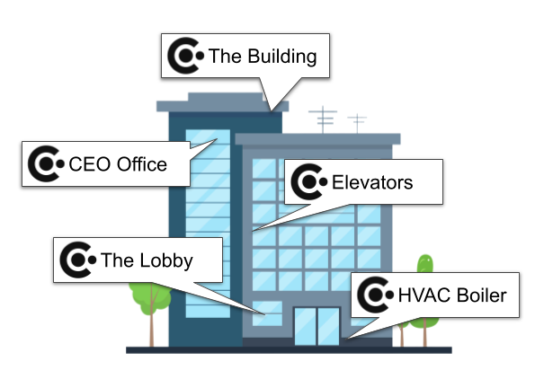
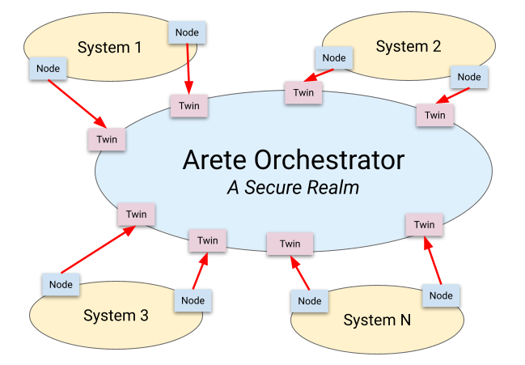
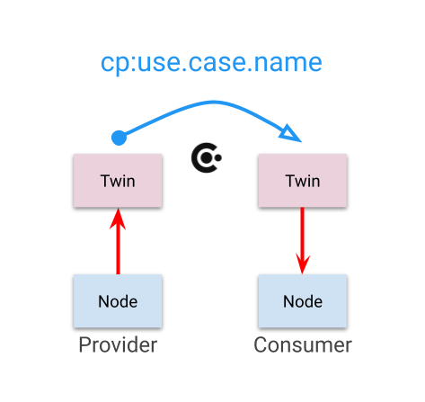

Project Arete
Project AreteGoverned connectivity for systems, devices, and AI agents.
Arete transforms digital assets into interoperable, context-driven participants in a secure and composable network — deciding whether two nodes should connect, under what contract, and in what context, before any data flows.
Arete {ἀρετή}, pronounced ah‑reh‑TAY, is the ancient Greek concept of excellence — the full realization of potential. That is what this project does for connected assets.
The model in four steps
Traditional networks connect addresses and hope the rules get bolted on later. Arete is relationship-centric: nothing connects without declared identity, roles, and a matching Connection Profile.
Nodes publish the Connection Profiles they provide or consume, inside a declared context.
The orchestrator matches compatible provider and consumer declarations in a shared context.
A governed connection is instantiated — validated, policy-enforced, and auditable from the start.
The contract is monitored, adjusted, and audited across the connection’s whole lifecycle.
How Arete works
Three ideas carry the whole architecture: context-driven discovery, active orchestration, and capability-based binding.

Context-Driven Discovery
Each node declares its operational context — a physical location, a business function, a contract, or any other operational domain. The orchestrator uses context alignment to discover compatible nodes, so only appropriate nodes interact and business rules are enforced automatically.
No manual configuration, no fragile custom integrations: nodes autonomously find and connect with relevant counterparts across the network.

Orchestration
The Arete orchestrator sits at the center of a secure realm, maintaining synchronized twins of nodes from disparate constituent systems. It aligns those twins by evaluating their contexts and capabilities, following standardized Connection Profiles.
Every connection is validated by shared context and role, with policy and auditability enforced across all domains — turning silos into plug-and-play, zero-trust participants.

Capability-Based Binding
Nodes advertise capabilities as a provider or consumer of a named Connection Profile. The orchestrator pairs providers with consumers only when both parties can fulfill their roles, validates compatibility, and manages the full lifecycle of the connection.
Integration happens on the basis of what a node can do — not where it is or who built it.
The ecosystem
Everything is open and runnable today — SDKs, desktop apps, a widget catalog, and hosted orchestrators.
Arete SDK
Build CNS/CP applications in Node.js, Python, or Rust. Declare capabilities, watch state, and put properties with a few lines of code.
ARETE.md
One file that teaches any AI coding assistant how to build on CNS/CP — the mental model, the non-negotiables, and the SDK traps to avoid. Point your assistant at it and describe what you want.
Arete Gateway
Join a realm with four HTTP calls: a local REST/SSE service that puts any application on a governed realm — no SDK embedded, connections appear, events stream.
Arete Monitor
A live dashboard for CNS/CP realms — systems, contexts, connections, and a realm graph. Installers for macOS, Windows, and Linux.
Arete Widget
Virtual devices on a realm: describe a widget in YAML — its CP capabilities plus a faceplate — and it lives as a governed node with a control panel. No hardware required.
Widget Library
A community-extensible catalog of YAML widget definitions, validated against the CP registry and loaded by Arete Widget at runtime.
Arete Hosting
Your own orchestrator in a few clicks — sign in, pick a name, and get a ready-to-run realm at <name>.aretehosting.com. Free to use right now.
Connection Profiles
CPs are governed centrally in the open CP registry. Browse existing profiles like padi.light before authoring your own.
Get started with Project Arete
Ready to eliminate integration barriers and orchestrate your assets with open-source technology? Pick your path.
- Business leaders — reach out to explore alignment on the contact page.
- System integrators — join an office-hours session to explore Arete.
- Developers — spin up a realm on Arete Hosting and point the SDK at it.